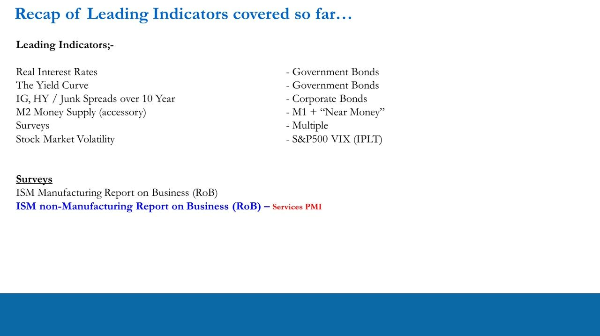
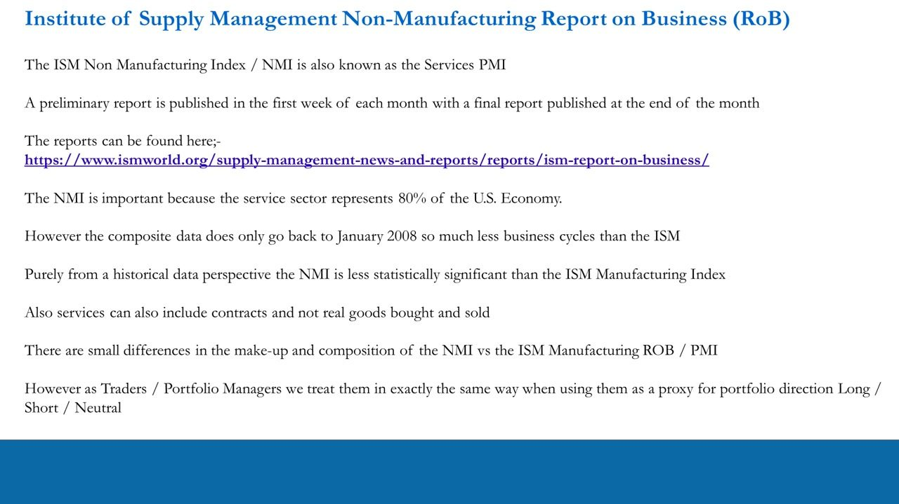
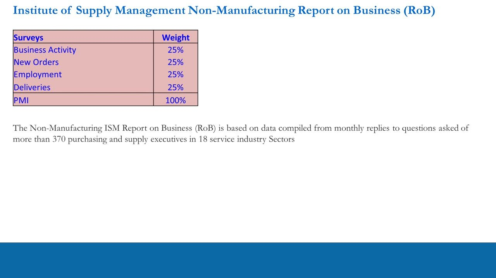
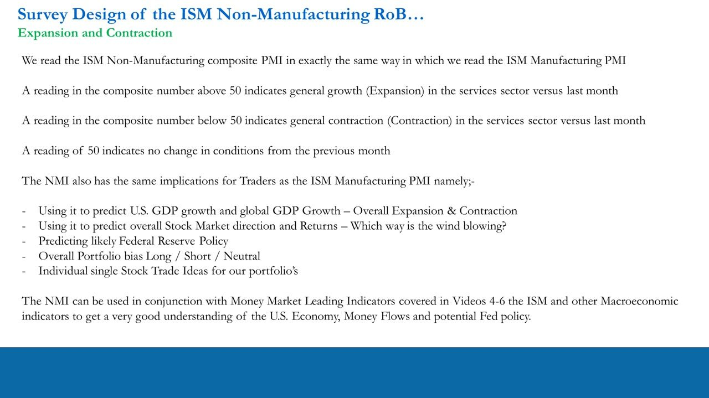
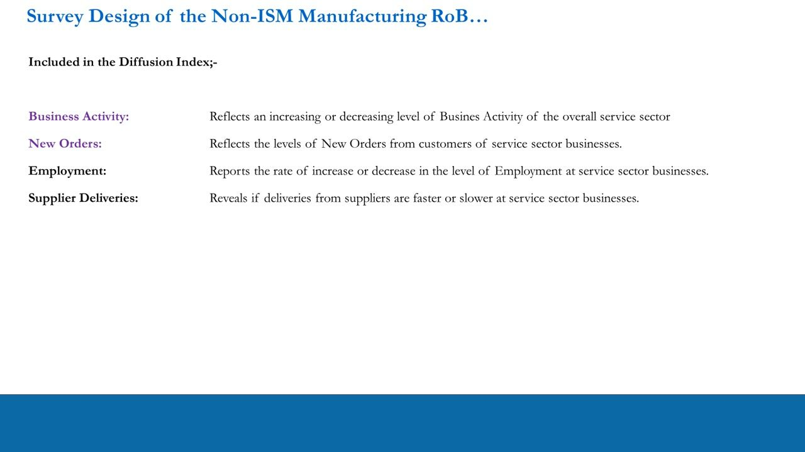
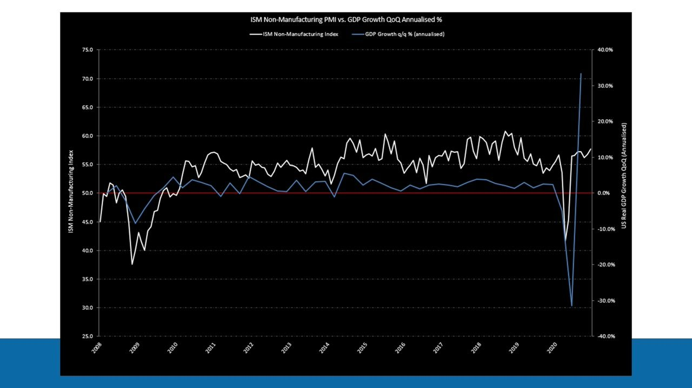
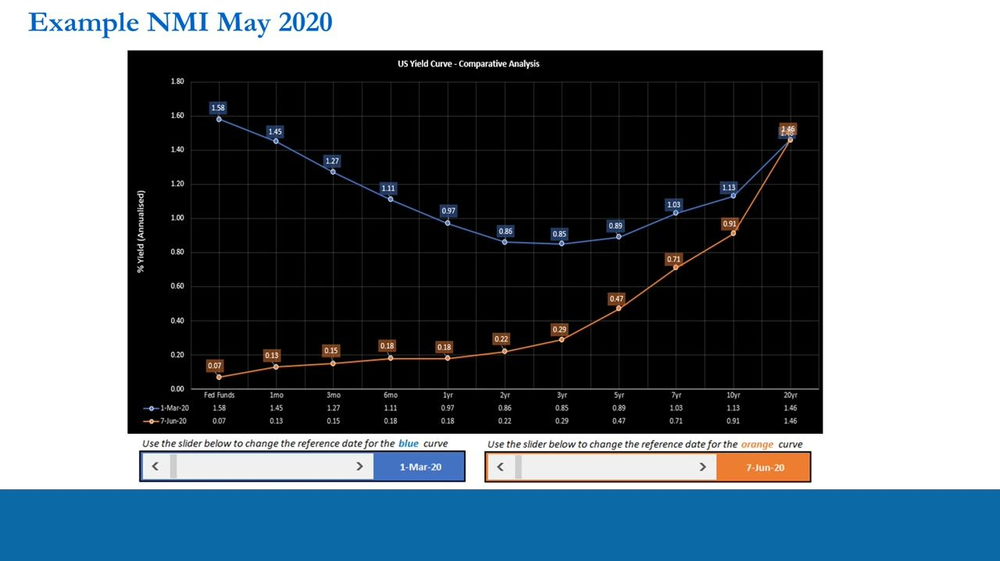
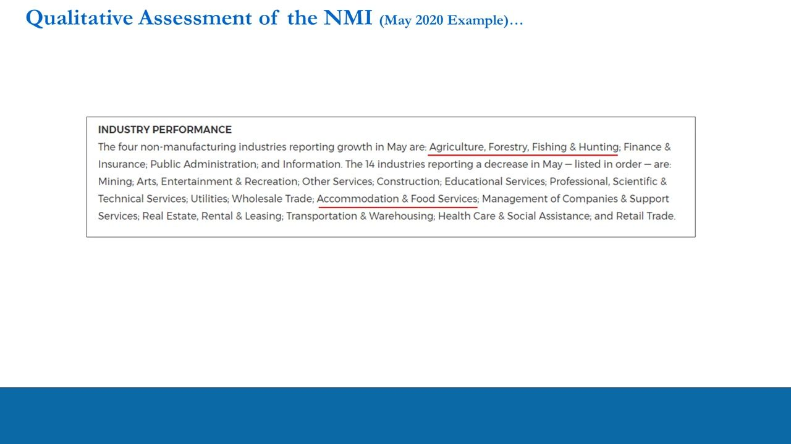
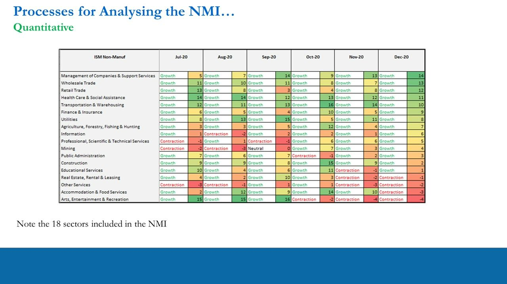

The ISM Non-Manufacturing Report on Business (Services PMI)
Reading the NMI — the diffusion index for the ~80% of the U.S. economy that is services
The ISM Non-Manufacturing Index (NMI), also called the Services PMI, is read exactly like the manufacturing PMI — above 50 is expansion, below 50 is contraction — and because services are 80% of the U.S. economy it is a key leading indicator for GDP, stocks, Fed policy and portfolio bias.
The gist
- The ISM Non-Manufacturing Index (NMI) is the Services PMI; it matters because the service sector represents 80% of the U.S. economy.
- Read it like the manufacturing PMI: composite above 50 = expansion vs last month, below 50 = contraction, 50 = no change.
- The composite is built from four equally-weighted (25% each) sub-indices — Business Activity, New Orders, Employment, Supplier Deliveries — but Business Activity and New Orders carry the leading signal.
- Reports come out in the first week of each month for the PREVIOUS month (a preliminary read early, a final read at month-end).
- Composite NMI data only goes back to January 2008, so it spans fewer cycles than manufacturing; component data runs back to July 1997.
- Use the NMI the same way as the ISM: to read GDP/stock-market direction, likely Fed policy, and overall Long/Short/Neutral bias — plus a monthly quantitative + qualitative sector process for trade-idea clues, never a shortcut.
Where the NMI fits among the leading indicators
- Surveys are one family of leading indicators alongside real interest rates, the yield curve, IG/HY credit spreads over the 10-year, M2 money supply and stock-market volatility (VIX).
- Two ISM surveys are used: the ISM Manufacturing Report on Business and the ISM Non-Manufacturing Report on Business — the Services PMI covered here.
This lesson is the fourth in the leading-indicators series and adds the services survey to the manufacturing survey already covered.

What the NMI is and why it matters
- The ISM Non-Manufacturing Index (NMI) is also known as the Services PMI.
- A preliminary report is published in the first week of each month, with a final report at the end of the month.
- It matters because the service sector represents 80% of the U.S. economy.
- Composite data only goes back to January 2008 — far fewer business cycles than manufacturing — so historically it is less statistically significant.
- Services can include contracts, not just real goods bought and sold; make-up differs slightly from manufacturing, but traders/PMs treat both the same way as a proxy for portfolio direction (Long/Short/Neutral).
The NMI's strength is its coverage of most of the economy; its weakness is a short history versus the manufacturing series.

Survey weights and construction
- The composite PMI is four sub-indices each weighted 25%: Business Activity, New Orders, Employment, Deliveries (= 100%).
- The report is compiled from monthly replies to more than 370 purchasing and supply executives across 18 service-industry sectors.
This is a different mix from the manufacturing PMI (five components), but the same diffusion-index method.

Reading the composite: the 50 line
- Read the NMI composite exactly like the manufacturing PMI.
- Above 50 = general growth (expansion) in services vs last month; below 50 = contraction; a reading of 50 = no change.
- Same trader uses as the ISM: predict U.S. and global GDP growth, predict stock-market direction and returns, anticipate Federal Reserve policy, set overall portfolio bias (Long/Short/Neutral), and source individual single-stock trade ideas.
- Best used in conjunction with the money-market leading indicators (Videos 4-6), the ISM and other macro indicators.
The 50 line is the pivot between expansion and contraction relative to the prior month.

What is (and isn't) in the diffusion index
- In the diffusion index: Business Activity (level of overall service-sector activity), New Orders (new orders from customers), Employment (rate of hiring/firing), Supplier Deliveries (whether deliveries are faster or slower).
- Not in the diffusion index: Inventories, Prices, Order Backlog, New Export Orders, Imports, Inventory Sentiment.
- Hierarchy (per lesson): Business Activity and New Orders carry the leading signal; Employment lags (follows activity/orders); Supplier Deliveries matters less in services because services are non-physical; Backlog of Orders is a useful confirmation read.
Although the four composite parts are weighted equally, Business Activity and New Orders should be weighted more heavily as the leading components.

The NMI history and its relationship to GDP
- The NMI tracks U.S. Real GDP growth (QoQ annualised) closely: the NMI 50 level aligns with roughly 0% GDP growth.
- Both crashed together in 2008-09 (NMI to ~37.5) and again in the 2020 COVID shock (NMI trough ~41.5), each followed by a V-shaped rebound.
- Composite NMI is available from Jan 2008; component survey data goes back to July 1997, so components can be studied over a longer history in isolation.
The chart demonstrates why the NMI is treated as a GDP proxy and a directional signal for equities.

Worked example: the May 2020 trough
- PMIs are reported in the first week of the month for the PREVIOUS month — so the May 2020 survey appeared in the first week of June.
- March-April 2020 were the COVID liquidity sell-off and Fed liquidity injections; the ISM and NMI surveys were troughing (though at the time you never know a trough is in — the same caution applies to peaks).
- NMI Business Activity leapt (Apr 26.0 to May 41.0, a +15.0 point change), a strong early June signal that Fed action and reopening had helped the economy trough.
- Corroborated by the yield curve: between 1-Mar-20 and 7-Jun-20 the front end collapsed toward zero (Fed to ~0.07%) with a dramatic bull steepening.
The release-timing point is key: acting on the May data in early June, the trader had a real-time read on the turn.

Qualitative read: industry performance
- Each report ranks the 18 sectors by whether they are growing or contracting and lists them in order.
- May 2020 example: only four industries reported growth (Agriculture, Forestry, Fishing & Hunting; Finance & Insurance; Public Administration; Information); 14 reported a decrease, led by Mining.
- Reading the ordered lists gives clues about which parts of the services sector are turning.
The qualitative rankings point you toward sectors to research, not to trade directly.

The monthly process: quantitative heat-maps + qualitative comments
- Quantitative: build a monthly sector-by-month heat-map (Growth/Contraction/Neutral plus streak count) for the composite and each component across the 18 sectors, and look for turning points and trends.
- Qualitative: read the verbatim industry comments from the report to understand the story behind the numbers.
- The NMI gives light-bulb clues about where to look — but you must then run the full trade-idea process to identify actual single stocks.
- No shortcuts: never see one NMI number, pick any stock in the sector, and call it a trade idea; and don't rely on the ISM/NMI as your only idea source.
The NMI is the starting point of a disciplined monthly workflow, not the finished trade.

Glossary
- NMI (Services PMI)ISM Non-Manufacturing Index — the diffusion index for U.S. services, read against the 50 line; services are ~80% of the economy.
- Diffusion indexA survey index where a reading above 50 means more respondents report expansion than contraction; 50 means no change vs the prior month.
- Composite sub-indicesThe four equally-weighted (25% each) parts of the NMI: Business Activity, New Orders, Employment, Supplier Deliveries.
- Business ActivityThe services analogue of manufacturing 'Production'; a leading sub-index measuring the overall level of service-sector activity.
- Report on Business (RoB)The ISM's monthly survey publication — preliminary in the first week of the month, final at month-end, covering the previous month.
- Not-in-composite componentsInventories, Prices, Order Backlog, New Export Orders, Imports and Inventory Sentiment — reported but excluded from the headline NMI.